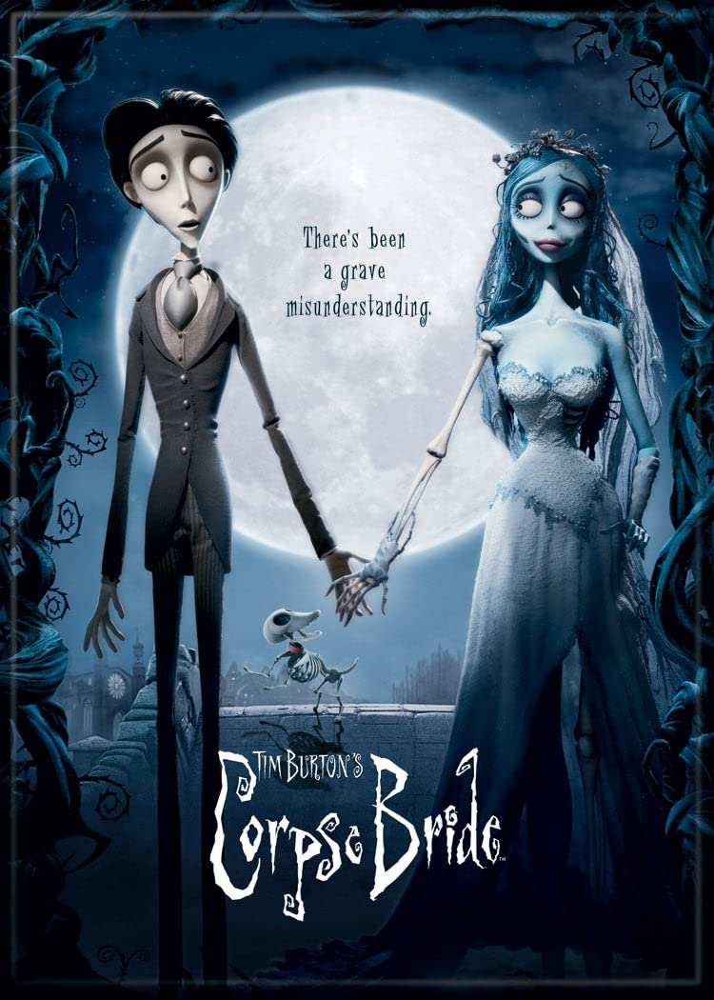
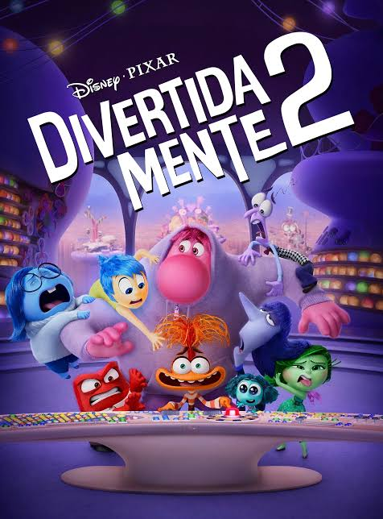
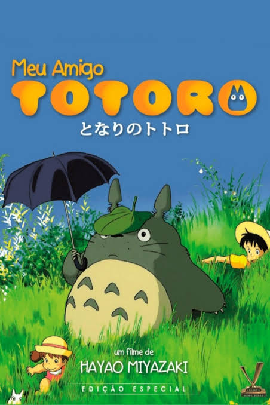
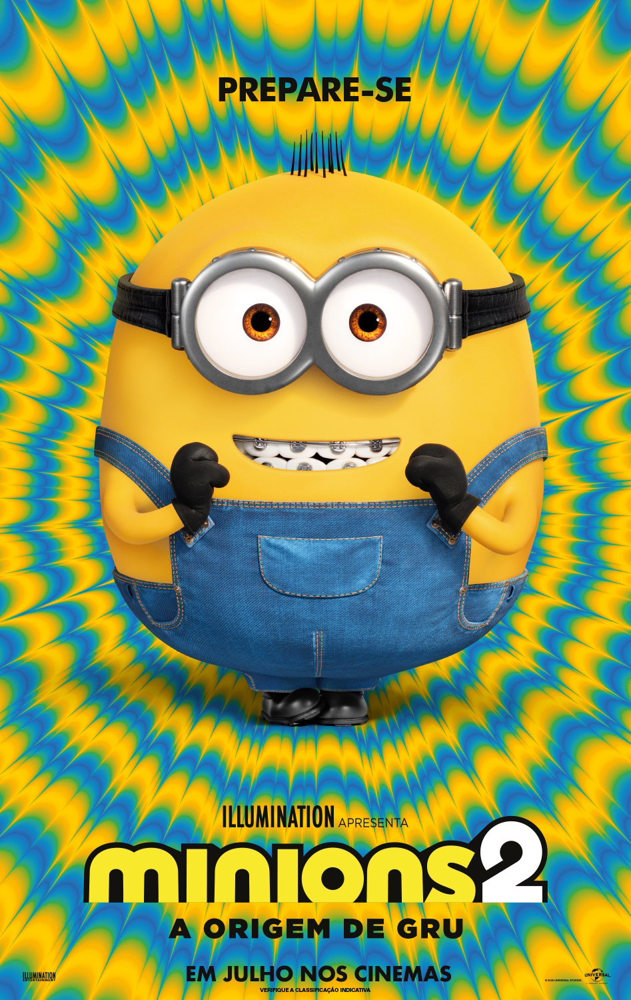
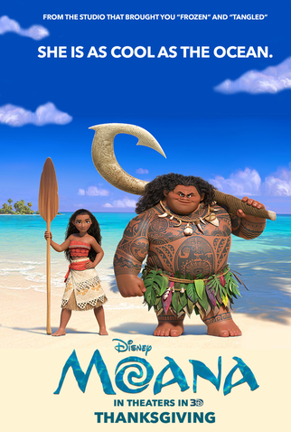
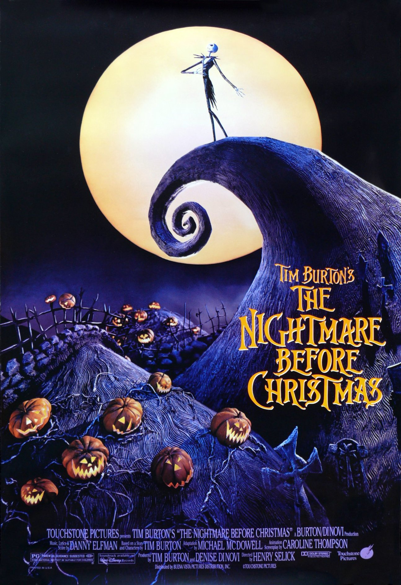
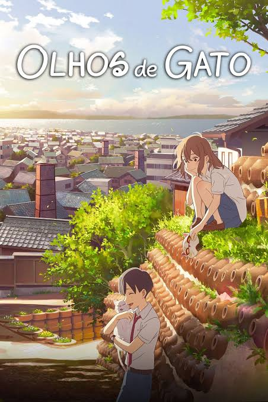
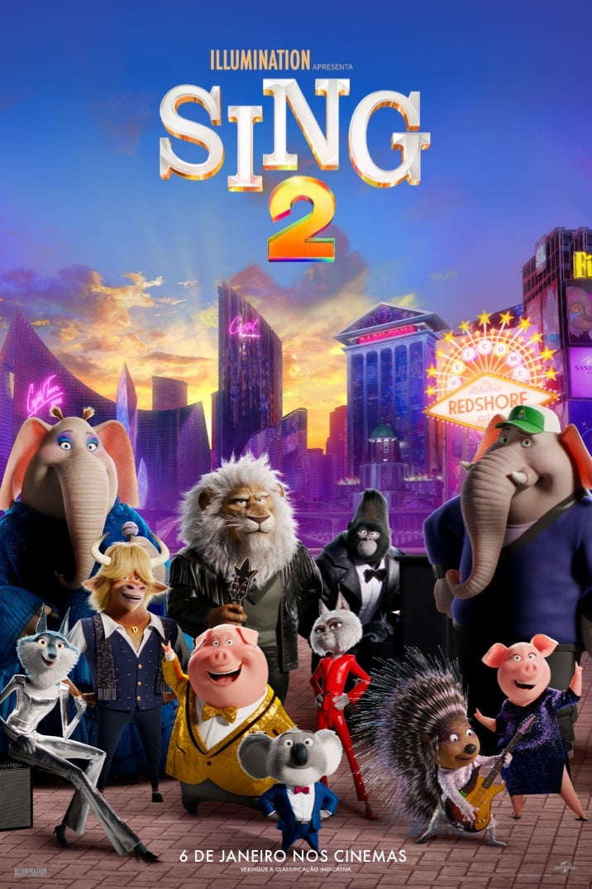
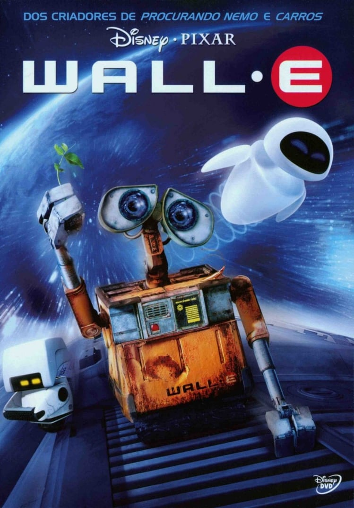

A noiva cadaver
A Noiva-Cadáver se passa em um vilarejo europeu do século XIX, onde vive Victor Van Dorst (Johnny Depp), um jovem que está prestes a se casar com Victoria Everglot (Emily Watson). Porém, acidentalmente, Victor se casa com a Noiva-Cadáver (Helena Bonham Carter), que o leva para conhecer a Terra dos Mortos. Desejando desfazer o ocorrido para poder enfim se casar com Victoria, aos poucos Victor percebe que a Terra dos Mortos é bem mais animada do que o meio vitoriano em que nasceu e cresceu.

Os incriveis
Depois do governo banir o uso de superpoderes, o maior herói do planeta, o Sr. Incrível, vive de forma pacata com sua família. Apesar de estar feliz com a vida doméstica, o Sr. Incrível ainda sente falta dos tempos em que viveu como super-herói, e sua grande chance de entrar em ação novamente surge quando um velho inimigo volta a atacar. Só que agora ele precisa contar com a ajuda de toda a família para vencer o vilão.

Barbie
No fabuloso live-action da boneca mais famosa do mundo, acompanhamos o dia a dia em Barbieland - o mundo mágico das Barbies, onde todas as versões da boneca vivem em completa harmonia e suas únicas preocupações são encontrar as melhores roupas para passear com as amigas e curtir intermináveis festas. Porém, uma das bonecas (interpretada por Margot Robbie) começa a perceber que talvez sua vida não seja tão perfeita assim, questionando-se sobre o sentido de sua existência e alarmando suas companheiras. Logo, sua vida no mundo cor-de-rosa começa a mudar e, eventualmente, ela sai de Barbieland.

Carros 3
Veterano das pistas, o campeoníssimo Relâmpago McQueen se vê em apuros após o surgimento de um novato bastante veloz, Jackson Storm, que utiliza de alta tecnologia nos treinamentos. Obrigado a chegar ao limite para batê-lo, McQueen acaba sofrendo um sério acidente durante uma corrida, que o obriga a abandonar o campeonato daquele ano. Prestes a iniciar a próxima temporada, ele se vê em dúvidas sobre se consegue ser rápido o suficiente para bater Storm e, por causa disto, busca ajuda com seu novo patrocinador.
Cruella
Ambientado na Londres dos anos 70 em meio à revolução do punk rock, o filme da Disney mostra a história de uma jovem vigarista chamada Estella (Emma Stone). Inteligente, criativa e determinada a fazer um nome para si através de seus designs, ela acaba chamando a atenção da Baronesa Von Hellman (Emma Thompson), uma lenda fashion que é devastadoramente chique e assustadora. Entretanto, o relacionamento delas desencadeia um curso de eventos e revela.

Descendantes
Os principais vilões dos contos de fadas vivem isolados em uma ilha distante. Entretanto, quando o filho da Bela e da Fera está prestes a assumir o reino de Auradon, ele resolve permitir que os filhos de quatro vilões convivam e estudem na principal escola do local. É lá que Mal (Dove Cameron), filha de Malévola (Kristen Chenoweth); Evie (Sofia Carson), filha da Rainha Má (Kathy Najimy); Jay (Booboo Stewart), filho de Jafar (Maz Jobrani); e Carlos (Cameron Boyce), filho de Cruela De Vil (Wendy Raquel Robinson), precisarão decidir se seguirão o caminho dos pais ou se tomarão outro rumo.

Divertidamente 2
Divertidamente 2 marca a sequência da famosa história de Riley (Kaitlyn Dias). Com um salto temporal, a garota agora se encontra mais velha, com 13 anos de idade, passando pela tão temida pré-adolescência. Junto com o amadurecimento, a sala de controle mental da jovem também está passando por uma demolição para dar lugar a algo totalmente inesperado: novas emoções.
Festa no céu
Um grupo de crianças bagunceiras é encaminhado a uma visita guiada ao museu, como “punição” pelo mau comportamento. Lá, eles acabam se envolvendo em uma aventura mágica que os leva a um mundo encantado, onde aprendem sobre a importância da amizade, da coragem e do respeito. Através de suas travessuras, eles descobrem que a verdadeira festa acontece quando se está com aqueles que amamos.

Meu amigo totoro
Mei é uma jovem que encontra uma pequena passagem em seu quintal, que a leva a um lendário espírito da floresta, conhecido como Totoro. Sua mãe está no hospital e seu pai divide o tempo entre dar aulas na faculdade e cuidar de sua mulher doente. Quando Mei tenta visitar a mãe por conta própria, se perde na floresta, e só o grande e fofo Totoro pode ajudá-la a achar o caminho de volta para casa.

Guerra mundial z
Uma terrível e misteriosa doença se espalha pelo mundo, transformando as pessoas em uma espécie de zumbis. A velocidade do contágio é impressionante e logo o governo americano recruta um ex-investigador da ONU (Organização das Nações Unidas) para investigar o que pode estar acontecendo e assim salvar a humanidade, tendo em vista que as previsões são as mais catastróficas possíveis. Gerry Lane (Brad Pitt) tinha optado por dedicar mais tempo a sua esposa Karen (Mireille Enos) e as filhas, mas seu amor a pátria e o desejo de salvar sua família acabam contribuindo para que ele tope a missão. Agora, ele precisa percorrer o caminho inverso da contaminação para tentar entender as causas ou, ao menos, indentificar uma maneira de conter o contágio até que se descubra uma cura antes do apocalipse. Começa uma verdadeira corrida contra o tempo, que mostra-se cada vez mais curto, na medida que a população de humanos não para de diminuir.

Minions 2
Minions 2: A Origem de Gru é a continuação das aventuras dos Minions, e desta vez, eles ajudam um Gru ainda criança, descobrindo como ser vilão. Na década de 1970, Gru está crescendo no subúrbio. Fã de um grupo de supervilões conhecido como Vicious 6, Gru traça um plano para se tornar malvado o suficiente para se juntar a eles. Felizmente, ele recebe apoio de seus leais seguidores, os Minions. Juntos, eles exercem suas habilidades enquanto constroem seu primeiro covil, experimentam suas primeiras armas e realizam as primeiras missões. Quando os Vicious 6 expulsam seu líder - o lendário lutador Wild Knuckles - Gru participa de uma entrevista para se tornar seu mais novo membro. A entrevista não vai bem, e só piora depois que Gru os supera e de repente, o garoto se vê como inimigo mortal do grupo do mal. Gru se voltará para uma fonte improvável de orientação, o próprio Wild Knuckles, e descobrirá que até os supervilões precisam de uma ajudinha de seus amigos.

Moana/div>
Moana Waialiki é uma corajosa jovem, filha única do chefe de uma tribo na Oceania, vinda de uma longa linhagem de navegadores. Quando os pescadores de sua ilha não conseguem pescar nenhum peixe e as colheitas falham, ela descobre que o semideus Maui causou a praga ao roubar o coração da deusa Te Fiti. Entusiasta das viagens marítimas, a jovem se vê querendo descobrir mais sobre seu passado e ajudar a comunidade, mesmo que a família queira proteger Moana a qualquer custo. Então, ela resolve partir em busca de seus ancestrais, habitantes de uma ilha mítica que ninguém sabe onde é. A única maneira de curar a ilha é persuadir Maui a devolver o coração de Te Fiti, então Moana parte em uma jornada épica pelo Pacífico. Moana começa sua jornada em mar aberto, onde enfrenta terríveis criaturas marinhas e descobre histórias do submundo. O filme é baseado em histórias da mitologia polinésia.

O estranho mundo de jack
Jack Skellington (Chris Sarandon) é um ser fantástico que vive na Cidade do Halloween, um local cercado por criaturas fantásticas. Lá todos passam o ano organizando o Halloween do ano seguinte mas, após mais um Halloween, Jack se mostra cansado de fazer aquilo todos os anos. Assim ele deixa os limites da Cidade do Halloween e vagueia pela floresta. Por acaso acha alguns portais, sendo que cada um leva até um tipo festividade. Jack acaba atravessando o portal do Natal, onde vê demonstrações do espírito natalino. Ao retornar para a Cidade do Halloween, sem ter compreendido o que viu, ele começa a convencer os cidadãos a sequestrarem o Papai Noel (Edward Ivory) e fazerem seu próprio Natal. Apesar de argumentos fortes de sua leal namorada Sally (Catherine O'Hara) contra o projeto, o Papai Noel é capturado. Mas os fatos mostrarão que Sally estava totalmente certa.

Olhos de gato
O segundo longa-metragem da Studio Colorido, Olhos de Gato, conta a história de Miyo Sasaki, também conhecida como Muge, uma menina que sonha em conquistar Kento Hinode, seu grande amor. Ela tenta fazer com que ele a note todos os dias na escola, apenas para ser em vão. Contudo, Muge esconde um segredo que nunca contou à ninguém: ela consegue se transformar em uma gata branca. Ela descobriu ao achar uma máscara de gato que, ao colocar, a faz virar no animal e usa sua nova forma para visitar Kento todas as tardes e noites, mesmo não podendo falar, ela pde ficar ao lado dele. Porém, existe uma probabilidade de que ela nunca possa mais voltar a ser humana caso ela abuse do uso da máscara. Além disso, Muge ainda tem que aturar as tranformações em sua própria casa, já que seus pais estão se separando, o que faz com que Muge use ainda mais a máscara para ficar longe de casa.

Sing 2
Em Sing 2, o criativo coala Buster Moon e seu elenco animal de estrelas se preparam para lançar uma extravagante apresentação na cintilante e glamorosa capital universal do entretenimento: Redshore. Há apenas um obstáculo no caminho desses artistas: eles precisam encontrar e persuadir o astro do rock mais recluso do mundo, Clay Calloway, a se juntar a eles. O que começa como o sonho de Buster de um grande sucesso, logo se torna uma missão emocional, que demonstra o poder da música para curar até mesmo o coração mais partido - e o convencer a voltar aos palcos. Essa galera enfrentará seus medos, fazendo novos amigos e superando seus limites, pois o show não pode parar.

Wall-e
Após entulhar a Terra de lixo e poluir a atmosfera com gases tóxicos, a humanidade deixou o planeta e passou a viver em uma gigantesca nave. O plano era que o retiro durasse alguns poucos anos, com robôs sendo deixados para limpar o planeta. Wall-E é o último destes robôs, que se mantém em funcionamento graças ao auto-conserto de suas peças. Sua vida consiste em compactar o lixo existente no planeta, que forma torres maiores que arranha-céus, e colecionar objetos curiosos que encontra ao realizar seu trabalho. Até que um dia surge repentinamente uma nave, que traz um novo e moderno robô: Eva. A princípio curioso, Wall-E logo se apaixona pela recém-chegada.